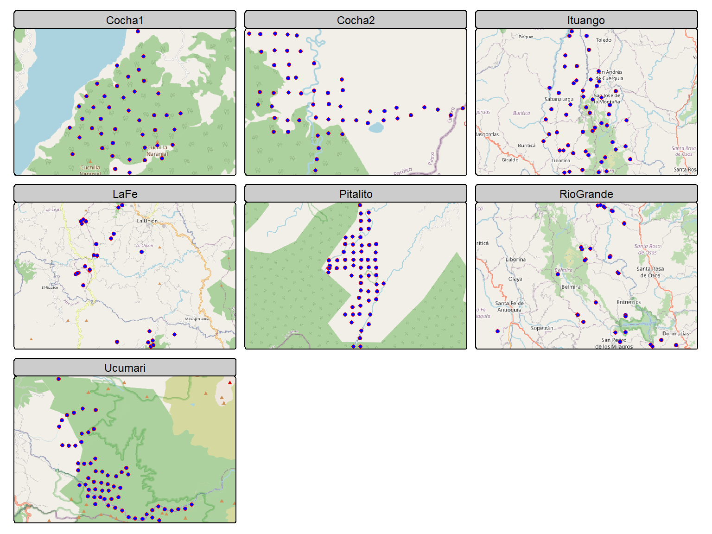
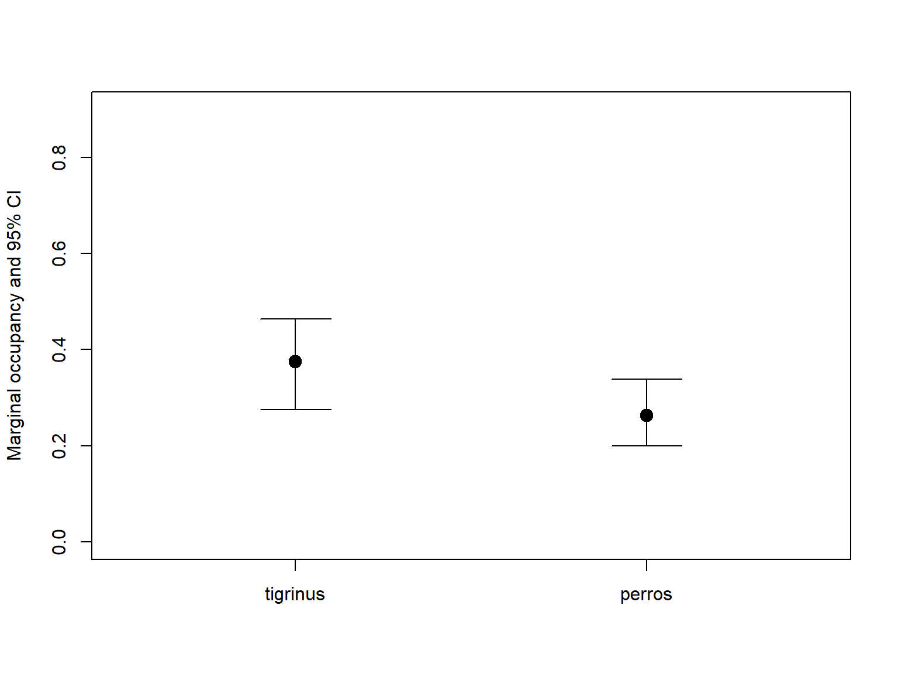

Multispecies occupancy model from Rota et al. (2016), for two (or more) interacting species. The model generalizes the standard single-species occupancy model from MacKenzie et al. (2002). We used Leopardus tigrinus and domestic dog data from 7 regions across the Colombian Andes, sampled with arrays of 20 to 30 camera traps.
there may be interest in exploring evidence for species interactions while accounting for the effects of environmental variables.
cargar paquetes
codigo R
library(knitr)
library(mapview) # mapas facil
library(readxl) #leer datos
library(readr) # lee datos
library(sf) # vector map
library(geodata) # replace getData de raster para Terra
library(raster) # mapas raster
library(spatstat) # interpola mapa
# library(maptools) # to coerce to ppp. note that 'maptools' will be retired by the end of 2023
# library(rgdal) # rgdal will be retired during 2023 #some tricks to change projection
# library(stars)
# library(unmarked) # occu models
library(DT) # html table
library(camtrapR) # camera trap data creation
library(terra) # new raster
library(elevatr) # get elevation
library(DT) # tables
library (tmap)
library(grateful) # citation packages
library(tidyverse) # maneja datos
# source("C:/CodigoR/tigrinus2/R/organizadato.R") # old version
source("C:/CodigoR/WCS-CameraTrap/R/organiza_datos_v3.R") # new versionCargar datos
Ucumari, Pitalito, La cocha1, La Fe, Rio Grande
codigo R
Full_data_ucu <- read_excel("D:/BoxFiles/Box Sync/CodigoR/tigrinus/data/Full_data_Ucumari_Huila_Cocha1_Cocha2.xlsx",
sheet = "ucumari", col_types = c("numeric",
"text", "text", "text", "text", "text",
"text", "text", "text", "text", "text",
"text", "text", "text", "text", "numeric",
"text", "text", "text", "text", "text",
"text", "text", "text", "text", "numeric",
"numeric", "numeric", "numeric",
"text"))
Full_data_pitalito <- read_csv("D:/BoxFiles/Box Sync/CodigoR/tigrinus/data/huila_merged.csv",
col_types = cols(`Date_Time Captured` = col_character(),
camera_trap_start_date = col_character(),
camera_trap_end_date = col_character()))
Full_data_pitalito <- read_csv("D:/BoxFiles/Box Sync/CodigoR/tigrinus/data/huila_merged.csv",
col_types = cols(`Date_Time Captured` = col_character(),
camera_trap_start_date = col_character(),
camera_trap_end_date = col_character()))
Full_data_cocha1 <- read_csv("D:/BoxFiles/Box Sync/CodigoR/tigrinus/data/Cocha1_merged.csv",
col_types = cols(camera_trap_start_date = col_character(),
camera_trap_end_date = col_character()))
Full_data_cocha2 <- read_csv("D:/BoxFiles/Box Sync/CodigoR/tigrinus/data/Cocha_2.csv",
col_types = cols(camera_trap_start_date = col_character(),
"Photo time" = col_character(),
"Photo Date" = col_character(),
camera_trap_end_date = col_character()))
Full_data_cocha2$camera_trap <- Full_data_cocha2$`Camera Trap Name`
lafe_data <- read_excel("C:/CodigoR/tigrinus2/data/cuencaverde.xlsx", sheet = "LaFe_2021")
lafe_data$year <- year(lafe_data$Photo_Date)
# filter by 2021
# lafe_data <- lafe_data_raw %>% filter(year == "2021")
riogrande_data <- read_excel("C:/CodigoR/tigrinus2/data/cuencaverde.xlsx",
sheet = "Riogrande_completo") |> mutate(yr=year(Photo_Date)) |> filter(yr==2021)
ituango_data <- read_excel("D:/BoxFiles/Box Sync/CodigoR/tigrinus3/Ituango/Base de Datos Final.xlsx",
sheet = "Datos_camaras12-07-2015") |> mutate(yr=Year) |> filter(yr==2015) |> filter (MES>=3 & MES<=6)get elevation and distance covariates
to include forest (GFW) cover y huella humana
codigo R
#casas <- read_csv("C:/CodigoR/tigrinus2/data/casas.csv")
# casas_sf <- st_as_sf(casas, coords = c("lon", "lat"), crs = "EPSG:4326")
casas_sf <- st_read("C:/CodigoR/tigrinus2/data/casas.shp")Reading layer casas' from data sourceC:.shp’ using driver `ESRI Shapefile’ Simple feature collection with 545 features and 3 fields Geometry type: POINT Dimension: XY Bounding box: xmin: -77.17977 ymin: -0.98924 xmax: -75.32256 ymax: 7.17079 Geodetic CRS: WGS 84
codigo R
############# start spatial part
#### make sf object
ucumari <- Full_data_ucu |>
select("Latitude",
"Longitude",
"camera_trap") |>
dplyr::distinct( ) |>
mutate(region="Ucumari")
pitalito <- Full_data_pitalito |>
select("Latitude",
"Longitude",
"camera_trap") |>
dplyr::distinct( ) |>
mutate(region="Pitalito")
cocha1 <- Full_data_cocha1 |>
select("Latitude",
"Longitude",
"camera_trap") |>
dplyr::distinct( ) |>
mutate(region="Cocha1")
cocha2 <- Full_data_cocha2 |>
select("Latitude",
"Longitude",
"camera_trap") |>
dplyr::distinct( ) |>
mutate(region="Cocha2")
lafe <- lafe_data |>
select("Latitude",
"Longitude",
"camera_trap") |>
dplyr::distinct( ) |>
mutate(region="LaFe")
riogrande <- riogrande_data |>
select("Latitude",
"Longitude",
"camera_trap") |>
dplyr::distinct( ) |>
mutate(region="RioGrande")
ituango <- ituango_data |>
select("Latitude",
"Longitude",
"camera_trap") |>
dplyr::distinct( ) |>
mutate(region="Ituango")
# join
puntos <- rbind(ucumari,
pitalito,
cocha1,
lafe,
riogrande,
ituango,
cocha2)
################
# plot map
################
#
# pal = mapviewPalette("mapviewTopoColors") #color palete
#
# mapview(elev_ucu_ras) +
# mapview(casa_dist_rast, col.regions = pal(100), at = seq(600, 240000, 100), legend = TRUE) +
# mapview(puntos_sf["camera_trap"])
############### end spatial partcrerar historias detección
codigo R
# make species names
Full_data_ucu$binomial <- str_c (Full_data_ucu$Genus, "_", Full_data_ucu$Species)
Full_data_pitalito$binomial <- Full_data_pitalito$`Genus Species`
# #funcion para crear todas las tablas de datos
# all_data_ucu <- f.matrix.creator2 (Full_data_ucu)
#
# # names(all_data) # ver lass especies y en que lista esta cada una
# # kable(names(all_data)) # html table
# # Tigrinus es lista 8
#
# datatable(
# data = as.data.frame(names(all_data_ucu)),
# caption = "Especies Ucumari",
# filter = "top"
# )
# fix date format
# Ucumari
Full_data_ucu$start_date <- as.Date(Full_data_ucu$"camera_trap_start_date", "%Y-%m-%d")
Full_data_ucu$end_date <- as.Date(Full_data_ucu$"camera_trap_end_date", "%Y-%m-%d")
Full_data_ucu$eventDate <- as.Date(Full_data_ucu$"Photo_Date", "%Y-%m-%d")
Full_data_ucu$eventDateTime <- ymd_hms(paste(Full_data_ucu$"Photo_Date", Full_data_ucu$"Photo time", sep=" "))
# rename camera id
Full_data_ucu$camid <- Full_data_ucu$`camera_trap`
# Pitalito
Full_data_pitalito$start_date <- as.Date(Full_data_pitalito$"camera_trap_start_date", "%Y-%m-%d")
Full_data_pitalito$end_date <- as.Date(Full_data_pitalito$"camera_trap_end_date", "%Y-%m-%d")
# Full_data_pitalito$eventDate <- as.Date(Full_data_pitalito$, "%Y-%m-%d")
Full_data_pitalito$eventDateTime <- ymd_hms(Full_data_pitalito$`Date_Time Captured`)
# rename camera id
Full_data_pitalito$camid <- Full_data_pitalito$camera_trap
# La Fe
lafe_data$start_date <- as.Date(lafe_data$"camera_trap_start_date", "%Y-%m-%d")
lafe_data$end_date <- as.Date(lafe_data$"camera_trap_end_date", "%Y-%m-%d")
lafe_data$eventDate <- as.Date(lafe_data$Photo_Date, "%Y-%m-%d")
lafe_data$eventDateTime <- ymd_hms(paste(lafe_data$"Photo_Date", lafe_data$"Photo time", sep=" "))# rename camera id
lafe_data$camid <- lafe_data$camera_trap
# Rio Grande
riogrande_data$start_date <- as.Date(riogrande_data$"camera_trap_start_date", "%Y-%m-%d")
riogrande_data$end_date <- as.Date(riogrande_data$"camera_trap_end_date", "%Y-%m-%d")
riogrande_data$eventDate <- as.Date(riogrande_data$Photo_Date, "%Y-%m-%d")
riogrande_data$eventDateTime <- lubridate::ymd_hm(paste(
as.Date(riogrande_data$"Photo_Date", "%Y-%m-%d"),
riogrande_data$"Photo time",
sep=" "),
tz = "America/Bogota")
# rename camera id
riogrande_data$camid <- riogrande_data$camera_trap
# Ituango add start end
ituango_data$start_date <- as.Date("2015-03-01", "%Y-%m-%d")
ituango_data$end_date <- as.Date("2015-06-30", "%Y-%m-%d")
ituango_data$eventDate <- as.Date(
paste(ituango_data$Year,
ituango_data$MES,
ituango_data$DIA,
sep="-"
),"%Y-%m-%d")
ituango_data$eventDateTime <- lubridate::ymd_hm(paste(
as.character(ituango_data$eventDate),
ituango_data$"HORA",
sep=" "),
tz = "America/Bogota")
# rename camera id
ituango_data$camid <- ituango_data$camera_trap
# filter 2021 and make uniques
ucu_CToperation <- Full_data_ucu |> dplyr::group_by(camid) |> #(array_locID) |>
mutate(minStart=start_date, maxEnd=end_date) |> distinct(Longitude, Latitude, minStart, maxEnd) |> dplyr::ungroup()
# remove one duplicated
# View(CToperation)
# CToperation <- CToperation[-15,]
pitalito_CToperation <- Full_data_pitalito |> dplyr::group_by(camid) |> #(array_locID) |>
mutate(minStart=start_date, maxEnd=end_date) |> distinct(Longitude, Latitude, minStart, maxEnd) |> dplyr::ungroup()
lafe_CToperation <- lafe_data |> dplyr::group_by(camid) |> #(array_locID) |>
mutate(minStart=start_date, maxEnd=end_date) |> distinct(Longitude, Latitude, minStart, maxEnd) |> dplyr::ungroup()
### selecting 2021
riogrande_CToperation <- riogrande_data |>
dplyr::group_by(camid) |> #(array_locID) |>
mutate(minStart=start_date, maxEnd=end_date) |> distinct(Longitude, Latitude, minStart, maxEnd) |> dplyr::ungroup()
ituango_CToperation <- ituango_data |>
dplyr::group_by(camid) |> #(array_locID) |>
mutate(minStart=start_date, maxEnd=end_date) |> distinct(Longitude, Latitude, minStart, maxEnd) |> dplyr::ungroup()
# remove dos problematic in lafe
# lafe_CToperation <- lafe_CToperation[-c(28,29),]
# Generamos la matríz de operación de las cámaras
ucu_camop <- cameraOperation(CTtable= ucu_CToperation, # Tabla de operación
stationCol= "camid", # Columna que define la estación
setupCol= "minStart", #Columna fecha de colocación
retrievalCol= "maxEnd", #Columna fecha de retiro
#hasProblems= T, # Hubo fallos de cámaras
dateFormat= "%Y-%m-%d")#, #, # Formato de las fechas
#cameraCol="Camera_Id")
# sessionCol= "Year")
pitalito_camop <- cameraOperation(CTtable= pitalito_CToperation, # Tabla de operación
stationCol= "camid", # Columna que define la estación
setupCol= "minStart", #Columna fecha de colocación
retrievalCol= "maxEnd", #Columna fecha de retiro
#hasProblems= T, # Hubo fallos de cámaras
dateFormat= "%Y-%m-%d")#, #, # Formato de las fechas
#cameraCol="Camera_Id")
# sessionCol= "Year")
lafe_camop <- cameraOperation(CTtable= lafe_CToperation, # Tabla de operación
stationCol= "camid", # Columna que define la estación
setupCol= "minStart", #Columna fecha de colocación
retrievalCol= "maxEnd", #Columna fecha de retiro
#hasProblems= T, # Hubo fallos de cámaras
dateFormat= "%Y-%m-%d")#, #, # Formato de las fechas
#cameraCol="Camera_Id")
# sessionCol= "Year")
riogrande_camop <- cameraOperation(CTtable= riogrande_CToperation, # Tabla de operación
stationCol= "camid", # Columna que define la estación
setupCol= "minStart", #Columna fecha de colocación
retrievalCol= "maxEnd", #Columna fecha de retiro
#hasProblems= T, # Hubo fallos de cámaras
dateFormat= "%Y-%m-%d")#, #, # Formato de las fechas
#cameraCol="Camera_Id")
# sessionCol= "Year")
ituango_camop <- cameraOperation(CTtable= ituango_CToperation, # Tabla de operación
stationCol= "camid", # Columna que define la estación
setupCol= "minStart", #Columna fecha de colocación
retrievalCol= "maxEnd", #Columna fecha de retiro
#hasProblems= T, # Hubo fallos de cámaras
dateFormat= "%Y-%m-%d")#, #, # Formato de las fechas
#cameraCol="Camera_Id")
# sessionCol= "Year")
# Generar las historias de detección ---------------------------------------
## remove problem species
Full_data_ucu$scientificName <- paste(Full_data_ucu$Genus,
Full_data_ucu$Species,
sep=" ")
#### remove setups
ucu_ind <- which(Full_data_ucu$scientificName=="NA NA")
Full_data_ucu <- Full_data_ucu[-ucu_ind,]
# ind <- which(Ecu_full$scientificName=="Set up")
# Ecu_full <- Ecu_full[-ind,]
#
# ind <- which(Ecu_full$scientificName=="Blank")
# Ecu_full <- Ecu_full[-ind,]
#
# ind <- which(Ecu_full$scientificName=="Unidentifiable")
# Ecu_full <- Ecu_full[-ind,]
Full_data_pitalito$scientificName <- Full_data_pitalito$`Genus Species`
#### remove setups and NAs
pitalito_ind <- which(is.na(Full_data_pitalito$scientificName))
Full_data_pitalito <- Full_data_pitalito[-pitalito_ind,]
# fix lafe
lafe_data$scientificName <- lafe_data$binomial
# fix riogrande
riogrande_data$scientificName <- riogrande_data$binomial
#### remove setups and NAs
riogrande_data_ind <- which(riogrande_data$scientificName=="NA_NA")
riogrande_data <- riogrande_data[-riogrande_data_ind,]
#### remove setups and NAs
ituango_data_ind <- which(ituango_data$scientificName=="NA")
ituango_data <- ituango_data[-ituango_data_ind,]
############### Ucu
ucu_DetHist_list <- lapply(unique(Full_data_ucu$scientificName), FUN = function(x) {
detectionHistory(
recordTable = Full_data_ucu, # abla de registros
camOp = ucu_camop, # Matriz de operación de cámaras
stationCol = "camid",
speciesCol = "scientificName",
recordDateTimeCol = "eventDateTime",
recordDateTimeFormat = "%Y-%m-%d %H:%M:%S",
species = x, # la función reemplaza x por cada una de las especies
occasionLength = 8, # Colapso de las historias a 10 ías
day1 = "station", # "survey" a specific date, "station", #inicie en la fecha de cada survey
datesAsOccasionNames = FALSE,
includeEffort = TRUE,
scaleEffort = FALSE,
#unmarkedMultFrameInput=TRUE
timeZone = "America/Bogota"
)
}
)
# names
names(ucu_DetHist_list) <- unique(Full_data_ucu$scientificName)
# Finalmente creamos una lista nueva donde estén solo las historias de detección
ucumari_ylist <- lapply(ucu_DetHist_list, FUN = function(x) x$detection_history)
# otra lista con effort scaled
ucumari_efort <- lapply(ucu_DetHist_list, FUN = function(x) x$effort)
# number of observetions per sp, collapsed to 7 days
# lapply(ylist, sum, na.rm = TRUE)
# leopardus tigrinus 7
# canis 18
############## Pitalito
pitalito_DetHist_list <- lapply(unique(Full_data_pitalito$scientificName), FUN = function(x) {
detectionHistory(
recordTable = Full_data_pitalito, # tabla de registros
camOp = pitalito_camop, # Matriz de operación de cámaras
stationCol = "camid",
speciesCol = "scientificName",
recordDateTimeCol = "eventDateTime",
recordDateTimeFormat = "%Y-%m-%d %H:%M:%S",
species = x, # la función reemplaza x por cada una de las especies
occasionLength = 6, # Colapso de las historias a 10 días
day1 = "station", # "survey" a specific date, "station", #inicie en la fecha de cada survey
datesAsOccasionNames = FALSE,
includeEffort = TRUE,
scaleEffort = FALSE,
#unmarkedMultFrameInput=TRUE
timeZone = "America/Bogota"
)
}
)
# names
names(pitalito_DetHist_list) <- unique(Full_data_pitalito$scientificName)
# Finalmente creamos una lista nueva donde estén solo las historias de detección
pitalito_ylist <- lapply(pitalito_DetHist_list, FUN = function(x) x$detection_history)
# otra lista con effort scaled
pitalito_efort <- lapply(pitalito_DetHist_list, FUN = function(x) x$effort)
# perro 41
# tigrinus 5
############## La Fe
# lafe_data <- lafe_data |>
# filter(camid != "Palmas_Ladera") |>
# filter(camid != "Abuel_Ladera")
lafe_DetHist_list <- lapply(unique(lafe_data$scientificName), FUN = function(x) {
detectionHistory(
recordTable = lafe_data, # tabla de registros
camOp = lafe_camop, # Matriz de operación de cámaras
stationCol = "camid",
speciesCol = "scientificName",
recordDateTimeCol = "eventDateTime",
recordDateTimeFormat = "%Y-%m-%d %H:%M:%S",
species = x, # la función reemplaza x por cada una de las especies
occasionLength = 7, # Colapso de las historias a 10 días
day1 = "station", # "survey" a specific date, "station", #inicie en la fecha de cada survey
datesAsOccasionNames = FALSE,
includeEffort = TRUE,
scaleEffort = FALSE,
#unmarkedMultFrameInput=TRUE
timeZone = "America/Bogota"
)
}
)
# names
names(lafe_DetHist_list) <- unique(lafe_data$scientificName)
# Finalmente creamos una lista nueva donde estén solo las historias de detección
lafe_ylist <- lapply(lafe_DetHist_list, FUN = function(x) x$detection_history)
# otra lista con effort scaled
lafe_efort <- lapply(lafe_DetHist_list, FUN = function(x) x$effort)
# perro 2
# tigrinus 3
############## Rio Grande
# lafe_data <- lafe_data |>
# filter(camid != "Palmas_Ladera") |>
# filter(camid != "Abuel_Ladera")
riogrande_DetHist_list <- lapply(unique(riogrande_data$scientificName), FUN = function(x) {
detectionHistory(
recordTable = riogrande_data, # tabla de registros
camOp = riogrande_camop, # Matriz de operación de cámaras
stationCol = "camid",
speciesCol = "scientificName",
recordDateTimeCol = "eventDateTime",
recordDateTimeFormat = "%Y-%m-%d %H:%M:%S",
species = x, # la función reemplaza x por cada una de las especies
occasionLength = 8, # Colapso de las historias a 10 días
day1 = "station", # "survey" a specific date, "station", #inicie en la fecha de cada survey
datesAsOccasionNames = FALSE,
includeEffort = TRUE,
scaleEffort = FALSE,
#unmarkedMultFrameInput=TRUE
timeZone = "America/Bogota"
)
}
)
# names
names(riogrande_DetHist_list) <- unique(riogrande_data$scientificName)
# Finalmente creamos una lista nueva donde estén solo las historias de detección
riogrande_ylist <- lapply(riogrande_DetHist_list, FUN = function(x) x$detection_history)
# otra lista con effort scaled
riogrande_efort <- lapply(riogrande_DetHist_list, FUN = function(x) x$effort)
# perro 2
# tigrinus 3
############## Ituango
# lafe_data <- lafe_data |>
# filter(camid != "Palmas_Ladera") |>
# filter(camid != "Abuel_Ladera")
ituango_DetHist_list <- lapply(unique(ituango_data$scientificName), FUN = function(x) {
detectionHistory(
recordTable = ituango_data, # tabla de registros
camOp = ituango_camop, # Matriz de operación de cámaras
stationCol = "camid",
speciesCol = "scientificName",
recordDateTimeCol = "eventDateTime",
recordDateTimeFormat = "%Y-%m-%d %H:%M:%S",
species = x, # la función reemplaza x por cada una de las especies
occasionLength = 13, # Colapso de las historias a 10 días
day1 = "station", # "survey" a specific date, "station", #inicie en la fecha de cada survey
datesAsOccasionNames = FALSE,
includeEffort = TRUE,
scaleEffort = FALSE,
#unmarkedMultFrameInput=TRUE
timeZone = "America/Bogota"
)
}
)
# names
names(ituango_DetHist_list) <- unique(ituango_data$scientificName)
# Finalmente creamos una lista nueva donde estén solo las historias de detección
ituango_ylist <- lapply(ituango_DetHist_list, FUN = function(x) x$detection_history)
# otra lista con effort scaled
ituango_efort <- lapply(ituango_DetHist_list, FUN = function(x) x$effort)
# perro 5
# tigrinus 26cocha data
codigo R
# fix dates
Full_data_cocha1$start_date <- as.Date(Full_data_cocha1$"camera_trap_start_date", "%Y-%m-%d")
Full_data_cocha1$end_date <- as.Date(Full_data_cocha1$"camera_trap_end_date", "%Y-%m-%d")
Full_data_cocha1$eventDateTime <- Full_data_cocha1$Date_Time #, "%Y-%m-%d")
# remove NA in datetime
# Full_data_cocha1$eventDateTime <- ymd_hms(paste(Full_data_cocha1$"Photo_Date", Full_data_cocha1$"Photo time", sep=" "))
# rename camera id
Full_data_cocha1$camid <- Full_data_cocha1$`camera_trap`
# filter 2021 and make uniques
cocha1_CToperation <- Full_data_cocha1 |> dplyr::group_by(camid) |> #(array_locID) |>
mutate(minStart=start_date, maxEnd=end_date) |> distinct(Longitude, Latitude, minStart, maxEnd) |> dplyr::ungroup()
# remove one duplicated
# View(CToperation)
# CToperation <- CToperation[-15,]
# Generamos la matríz de operación de las cámaras
cocha1_camop <- cameraOperation(CTtable= cocha1_CToperation, # Tabla de operación
stationCol= "camid", # Columna que define la estación
setupCol= "minStart", #Columna fecha de colocación
retrievalCol= "maxEnd", #Columna fecha de retiro
#hasProblems= T, # Hubo fallos de cámaras
dateFormat= "%Y-%m-%d")#, #, # Formato de las fechas
#cameraCol="Camera_Id")
# sessionCol= "Year")
# Generar las historias de detección ---------------------------------------
## remove problem species
Full_data_cocha1$scientificName <- Full_data_cocha1$`Genus Species`
#### remove setups
cocha1_ind <- which(is.na((Full_data_cocha1$scientificName)))
Full_data_cocha1 <- Full_data_cocha1[-cocha1_ind,]
# ind <- which(Ecu_full$scientificName=="Set up")
# Ecu_full <- Ecu_full[-ind,]
#
# ind <- which(Ecu_full$scientificName=="Blank")
# Ecu_full <- Ecu_full[-ind,]
#
# ind <- which(Ecu_full$scientificName=="Unidentifiable")
# Ecu_full <- Ecu_full[-ind,]
############### cocha1
cocha1_DetHist_list <- lapply(unique(Full_data_cocha1$scientificName), FUN = function(x) {
detectionHistory(
recordTable = Full_data_cocha1, # abla de registros
camOp = cocha1_camop, # Matriz de operación de cámaras
stationCol = "camid",
speciesCol = "scientificName",
recordDateTimeCol = "eventDateTime",
recordDateTimeFormat = "%Y-%m-%d %H:%M:%S",
species = x, # la función reemplaza x por cada una de las especies
occasionLength = 8, # Colapso de las historias a 10 ías
day1 = "station", # "survey" a specific date, "station", #inicie en la fecha de cada survey
datesAsOccasionNames = FALSE,
includeEffort = TRUE,
scaleEffort = FALSE,
#unmarkedMultFrameInput=TRUE
timeZone = "America/Bogota"
)
}
)
# names
names(cocha1_DetHist_list) <- unique(Full_data_cocha1$scientificName)
# Finalmente creamos una lista nueva donde estén solo las historias de detección
cocha1_ylist <- lapply(cocha1_DetHist_list, FUN = function(x) x$detection_history)
# otra lista con effort scaled
cocha1_efort <- lapply(cocha1_DetHist_list, FUN = function(x) x$effort)
# number of observetions per sp, collapsed to 7 days
# lapply(ylist, sum, na.rm = TRUE)
# leopardus tigrinus 9
# canis 1
############################
#### Cocha 2
############################
# fix dates
Full_data_cocha2$start_date <- as.Date(Full_data_cocha2$"camera_trap_start_date", "%Y-%m-%d")
Full_data_cocha2$end_date <- as.Date(Full_data_cocha2$"camera_trap_end_date", "%Y-%m-%d")
Full_data_cocha2$eventDateTime <- ymd_hms(paste(Full_data_cocha2$"Photo Date", Full_data_cocha2$"Photo time", sep=" "))
# remove NA in datetime
# Full_data_cocha1$eventDateTime <- ymd_hms(paste(Full_data_cocha1$"Photo_Date", Full_data_cocha1$"Photo time", sep=" "))
# rename camera id
Full_data_cocha2$camid <- Full_data_cocha2$`Camera Trap Name`
# filter 2021 and make uniques
cocha2_CToperation <- Full_data_cocha2 |> dplyr::group_by(camid) |> #(array_locID) |>
mutate(minStart=start_date, maxEnd=end_date) |> distinct(Longitude, Latitude, minStart, maxEnd) |> dplyr::ungroup()
# remove one duplicated
# View(CToperation)
# CToperation <- CToperation[-15,]
# Generamos la matríz de operación de las cámaras
cocha2_camop <- cameraOperation(CTtable= cocha2_CToperation, # Tabla de operación
stationCol= "camid", # Columna que define la estación
setupCol= "minStart", #Columna fecha de colocación
retrievalCol= "maxEnd", #Columna fecha de retiro
#hasProblems= T, # Hubo fallos de cámaras
dateFormat= "%Y-%m-%d")#, #, # Formato de las fechas
#cameraCol="Camera_Id")
# sessionCol= "Year")
# Generar las historias de detección ---------------------------------------
## remove problem species
Full_data_cocha2$scientificName <- Full_data_cocha2$`Genus Species`
#### remove setups
cocha2_ind <- which(is.na((Full_data_cocha2$scientificName)))
Full_data_cocha2 <- Full_data_cocha2[-cocha2_ind,]
# ind <- which(Ecu_full$scientificName=="Set up")
# Ecu_full <- Ecu_full[-ind,]
############### cocha2
cocha2_DetHist_list <- lapply(unique(Full_data_cocha2$scientificName), FUN = function(x) {
detectionHistory(
recordTable = Full_data_cocha2, # abla de registros
camOp = cocha2_camop, # Matriz de operación de cámaras
stationCol = "camid",
speciesCol = "scientificName",
recordDateTimeCol = "eventDateTime",
recordDateTimeFormat = "%Y-%m-%d %H:%M:%S",
species = x, # la función reemplaza x por cada una de las especies
occasionLength = 13, # Colapso de las historias a 10 ías
day1 = "station", # "survey" a specific date, "station", #inicie en la fecha de cada survey
datesAsOccasionNames = FALSE,
includeEffort = TRUE,
scaleEffort = FALSE,
#unmarkedMultFrameInput=TRUE
timeZone = "America/Bogota"
)
}
)
# names
names(cocha2_DetHist_list) <- unique(Full_data_cocha2$scientificName)
# Finalmente creamos una lista nueva donde estén solo las historias de detección
cocha2_ylist <- lapply(cocha2_DetHist_list, FUN = function(x) x$detection_history)
# otra lista con effort scaled
cocha2_efort <- lapply(cocha2_DetHist_list, FUN = function(x) x$effort)
# number of observetions per sp, collapsed to 7 days
# lapply(ylist, sum, na.rm = TRUE)
# leopardus tigrinus 29
# canis NA
# Pitalito
# perro 41
# tigrinus 5Data assembly
codigo R
#### Cocha 2
tigrinus_cocha2 <- cocha2_ylist[[29]] |> as.data.frame()
effort_cocha2 <- cocha2_efort[[29]] |> as.data.frame() |>
mutate(across(everything(), ~replace_na(., 0))) # replace NA to 0
# perro no hay en cocha2
my_vector <- cocha2_ylist[[29]]
perros_cocha2 <- ifelse(my_vector == 1, 0, my_vector) |> as.data.frame() # convert 1 to 0
#### Cocha 1
tigrinus_cocha1 <- cocha1_ylist[[9]] |> as.data.frame()
effort_cocha1 <- cocha1_efort[[9]] |> as.data.frame() |>
mutate(across(everything(), ~replace_na(., 0))) # replace NA to 0
# si hay perro en cocha2
# my_vector <- tigrinus_cocha2
perros_cocha1 <- cocha1_ylist[[1]] |> as.data.frame()# ifelse(my_vector == 1, 0, my_vector) # convert 1 to 0
#### LaFe
tigrinus_lafe <- lafe_ylist[[3]] |> as.data.frame()
effort_lafe <- lafe_efort[[3]] |> as.data.frame()|>
mutate(across(everything(), ~replace_na(., 0))) # replace NA to 0
# my_vector <- tigrinus_cocha2
perros_lafe <- lafe_ylist[[2]] |> as.data.frame() # ifelse(my_vector == 1, 0, my_vector) # convert 1 to 0
# perro 2
# tigrinus 3
#### Rio Grande
tigrinus_riogrande <- riogrande_ylist[[11]] |> as.data.frame()
effort_riogrande <- riogrande_efort[[11]] |> as.data.frame()|>
mutate(across(everything(), ~replace_na(., 0))) # replace NA to 0
# my_vector <- tigrinus_cocha2
perros_riogrande <- riogrande_ylist[[1]] |> as.data.frame() # ifelse(my_vector == 1, 0, my_vector) # convert 1 to 0
# perro 1
# tigrinus 11
#### Ituango
tigrinus_ituango <- ituango_ylist[[26]] |> as.data.frame()
effort_ituango <- ituango_efort[[26]] |> as.data.frame()|>
mutate(across(everything(), ~replace_na(., 0))) # replace NA to 0
# my_vector <- tigrinus_cocha2
perros_ituango <- ituango_ylist[[5]] |> as.data.frame() # ifelse(my_vector == 1, 0, my_vector) # convert 1 to 0
# perro 5
# tigrinus 26
#### Pitalito
tigrinus_pitalito <- pitalito_ylist[[5]] |> as.data.frame()
effort_pitalito <- pitalito_efort[[5]] |> as.data.frame()|>
mutate(across(everything(), ~replace_na(., 0))) # replace NA to 0
# my_vector <- tigrinus_cocha2
perros_pitalito <- pitalito_ylist[[41]] |> as.data.frame() # ifelse(my_vector == 1, 0, my_vector) # convert 1 to 0
# perro 41
# tigrinus 5
######### Ucumari
tigrinus_ucumari <- ucumari_ylist[[7]] |> as.data.frame()
effort_ucumari <- ucumari_efort[[7]] |> as.data.frame()|>
mutate(across(everything(), ~replace_na(., 0))) # replace NA to 0
# my_vector <- tigrinus_cocha2
perros_ucumari <- ucumari_ylist[[18]] |> as.data.frame() # ifelse(my_vector == 1, 0, my_vector) # convert 1 to 0
# leopardus tigrinus 7
# canis 18
# fix tigrinus_pitalito to complete 11 ocasiones
# tigrinus_pitalito$o11 <- NA
# perros_pitalito$o11 <- NA
# effort_pitalito$o11 <- NA
# fix tigrinus_lafe to complete 11 ocasiones
# tigrinus_lafe$o11 <- NA
# perros_lafe$o11 <- NA
# effort_lafe$o11 <- NA
DL_tigrinus <- rbind(tigrinus_ucumari,
tigrinus_pitalito,
tigrinus_cocha1,
tigrinus_lafe,
tigrinus_riogrande,
tigrinus_ituango,
tigrinus_cocha2)
# tigrinus_cocha2
#)
DL_perros <- rbind(perros_ucumari,
perros_pitalito,
perros_cocha1,
perros_lafe,
perros_riogrande,
perros_ituango,
perros_cocha2)
# perros_cocha2)
DL_effort <- rbind(effort_ucumari,
effort_pitalito,
effort_cocha1,
effort_lafe,
effort_riogrande,
effort_ituango,
perros_cocha2)#,
#effort_cocha2)
# add colname to later extract covs
DL_tigrinus$camera_trap <- row.names(DL_tigrinus)
DL_perros$camera_trap <- row.names(DL_perros)
DL_effort$camera_trap <- row.names(DL_effort)
# Letf join con puntos
DL_tigrinus_p <- left_join(DL_tigrinus, puntos)
DL_perros_p <- left_join(DL_perros, puntos)
# DL_tigrinus_p <- left_join(DL_tigrinus, puntos)
########## add spatial covs
# make sf and add projection
puntos_tigrinus_sf <- DL_tigrinus_p |> st_as_sf(coords =
c("Longitude", "Latitude"),
crs = "EPSG:4326")
# Extract coordinates and drop geometry
# coordinates <- st_coordinates(puntos_sf)
# data_no_geometry <- st_drop_geometry(sf_data)
# get elevation points... slow!
site_covs_ucu <- get_elev_point(puntos_tigrinus_sf[1:61,],
src = "aws", z = 12)
site_covs_pit <- get_elev_point(puntos_tigrinus_sf[62:122,],
src = "aws", z = 12)
site_covs_coc1 <- get_elev_point(puntos_tigrinus_sf[123:165,],
src = "aws", z = 12)
# site_covs_coc2 <- get_elev_point(puntos_tigrinus_sf[166:218,],
# src = "aws", z = 12)
site_covs_lafe <- get_elev_point(puntos_tigrinus_sf[166:192,],
src = "aws", z = 12)
site_covs_riogrande <- get_elev_point(puntos_tigrinus_sf[193:224,],
src = "aws", z = 12)
site_covs_ituango <- get_elev_point(puntos_tigrinus_sf[225:278,],
src = "aws", z = 12)
site_covs_coc2 <- get_elev_point(puntos_tigrinus_sf[279:331,],
src = "aws", z = 12)
# combine points in one sf object
site_covs <- rbind(site_covs_ucu,
site_covs_pit,
site_covs_coc1,
site_covs_lafe,
site_covs_riogrande,
site_covs_ituango,
site_covs_coc2)#,
# site_covs_coc2)
#z =1-14
# bb <- st_as_sfc(st_bbox(elevation_17)) # make bounding box
############## make distance map using SF
# Convert points to sp spatialpointdatafram
# casas_points <- as(casas_sf, "Spatial")
# Projection
casas_points_utm <- st_transform(casas_sf, CRS('+init=epsg:21818'))
# convert sf to ppp
nc_spatvect <- vect(casas_points_utm)
c_spatvect <- vect(casas_points_utm)
casa_dist_rast <- distance(rast(nc_spatvect, resolution = 100), c_spatvect) #|> mask(nc_spatvect) # < resolution + detail|———|———|———|———|
codigo R
# Extrae distancia casas
site_covs$dist_casa <- raster::extract(casa_dist_rast, site_covs)[,2] # also works
# rename elevation
site_covs <- rename(site_covs, elev = elevation)
# mapview(casa_dist_rast) + mapview(site_covs[,"camera_trap"])Map
Genaral map
codigo R
#
# general
tm_shape(puntos_tigrinus_sf, # add bb
bbox = tmaptools::bb(puntos_tigrinus_sf, ext = 1.5)) +
tm_basemap(c(StreetMap = "OpenStreetMap", TopoMap = "OpenTopoMap")) +# ("Esri.WorldImagery") + # usa basemap
tm_symbols(shape = 21, col = "red", fill = "blue",size =0.4) #+ #punto negrocodigo R
# tm_facets(by = "region", ncol = 3)Zoom to regions
codigo R
### detallado
tm_shape(puntos_tigrinus_sf) +
tm_basemap(c(StreetMap = "OpenStreetMap", TopoMap = "OpenTopoMap")) +# ("Esri.WorldImagery") + # usa basemap
tm_symbols(shape = 21, col = "red", fill = "blue",size =0.4) + #punto negro
tm_facets(by = "region", ncol = 3)
MODELOS DE CO-OCURRENCIA
codigo R
detformulas <- c( "~1", "~1")#, "~1")
#stateformulas <- c('~elev','~elev', '~elev', "~1", "~1", "~1", "~0")# 3 sp
stateformulas <- c('~elev','~elev', "~1") #"~0"
stateformulas_2 <- c('~elev + I(elev^2)','~elev + I(elev^2)', "~1") #"~0"
y <- list(as.matrix(DL_tigrinus_p[,1:10]),# truncate 10
as.matrix(DL_perros_p[,1:10])
)#[,1:5]))# , tigrinus y perros)
names(y) <- c("tigrinus", "perros")#, "ocelote")
# obs_covs <-as.data.frame(scale(cams_ucu_sf$dist_casa))
# names(obs_covs) <- "dist_casa"
site_covs_ucu <- data.frame(site_covs[,c('elev','dist_casa')])[,1:2]
site_covs_ucu <-as.data.frame(apply(site_covs_ucu,2,scale)) # notice scale here
names(site_covs_ucu) <- c("elev", "dist_casa")
#### effort
obs_covs <- list(
efort_tig=as.data.frame(DL_effort[,1:10]), # truncate to 10
effort_perro=as.data.frame(DL_effort[,1:10])
)
library(unmarked)
umf <- unmarkedFrameOccuMulti(y=y,
siteCovs=site_covs_ucu,
obsCovs = obs_covs)#NULL)
plot(umf)codigo R
#umf
# occFormulas Length should match number/order of columns in fDesign
umf@fDesign f1[tigrinus] f2[perros] f3[tigrinus:perros]psi[11] 1 1 1 psi[10] 1 0 0 psi[01] 0 1 0 psi[00] 0 0 0
codigo R
#########################
null_det <- c("~1", "~1")
null_occu <- c("~1", "~1")#, "~0")
null <- occuMulti(null_det, null_occu,
umf,
method="BFGS",
se=TRUE,
engine=c("C"),
silent=TRUE,
maxOrder=1,
penalty =2,#0.5 * sum(paramvals^2)
boot=250
)Bootstraping covariance matrix
codigo R
nullCall: occuMulti(detformulas = null_det, stateformulas = null_occu, data = umf, maxOrder = 1, penalty = 2, boot = 250, method = “BFGS”, se = TRUE, engine = c(“C”), silent = TRUE)
Occupancy: Estimate SE z P(>|z|) [tigrinus] (Intercept) -0.509 0.218 -2.33 1.97e-02 [perros] (Intercept) -1.029 0.208 -4.94 7.98e-07
Detection: Estimate SE z P(>|z|) [tigrinus] (Intercept) -2.00 0.157 -12.7 4.10e-37 [perros] (Intercept) -1.94 0.185 -10.5 1.28e-25
AIC: 1403.575
codigo R
########################
fit1 <- occuMulti(detformulas, stateformulas, umf,
method="BFGS", se=TRUE, engine=c("C"), silent=TRUE,
maxOrder=2,
penalty =2,#0.5 * sum(paramvals^2)
boot=250)Bootstraping covariance matrix
codigo R
fit1Call: occuMulti(detformulas = detformulas, stateformulas = stateformulas, data = umf, maxOrder = 2, penalty = 2, boot = 250, method = “BFGS”, se = TRUE, engine = c(“C”), silent = TRUE)
Occupancy: Estimate SE z P(>|z|) [tigrinus] (Intercept) -0.46136 0.261 -1.7669 7.72e-02 [tigrinus] elev 0.31187 0.141 2.2107 2.71e-02 [perros] (Intercept) -1.00940 0.235 -4.2960 1.74e-05 [perros] elev 0.00241 0.153 0.0157 9.87e-01 [tigrinus:perros] (Intercept) -0.05412 0.315 -0.1720 8.63e-01
Detection: Estimate SE z P(>|z|) [tigrinus] (Intercept) -2.02 0.169 -11.98 4.57e-33 [perros] (Intercept) -1.94 0.197 -9.86 6.14e-23
AIC: 1406.288
codigo R
# update model
# occFormulas2 <- c('~dist_casa', '~dist_casa', '~dist_casa', "~1", "~1", "~1", "~0")
occFormulas2 <- c('~dist_casa', '~dist_casa', "~1")
fit2 <- update(fit1, stateformulas=occFormulas2)Bootstraping covariance matrix
codigo R
fit2Call: occuMulti(detformulas = c(“~1”, “~1”), stateformulas = c(“~dist_casa”, “~dist_casa”, “~1”), data = umf, maxOrder = 2, penalty = 2, boot = 250, method = “BFGS”, se = TRUE, engine = c(“C”), silent = TRUE)
Occupancy: Estimate SE z P(>|z|) [tigrinus] (Intercept) -0.5002 0.245 -2.045 4.08e-02 [tigrinus] dist_casa -0.0782 0.168 -0.466 6.41e-01 [perros] (Intercept) -1.1018 0.256 -4.297 1.73e-05 [perros] dist_casa -0.6122 0.204 -3.000 2.70e-03 [tigrinus:perros] (Intercept) -0.0324 0.295 -0.110 9.12e-01
Detection: Estimate SE z P(>|z|) [tigrinus] (Intercept) -2.00 0.162 -12.34 5.77e-35 [perros] (Intercept) -1.94 0.207 -9.34 9.44e-21
AIC: 1398.559
codigo R
detFormulas_eff <- c('~efort_tig', '~effort_perro')
fit3 <- update(fit1, detformulas=detFormulas_eff)Bootstraping covariance matrix
codigo R
fit3Call: occuMulti(detformulas = c(“~efort_tig”, “~effort_perro”), stateformulas = c(“~elev”, “~elev”, “~1”), data = umf, maxOrder = 2, penalty = 2, boot = 250, method = “BFGS”, se = TRUE, engine = c(“C”), silent = TRUE)
Occupancy: Estimate SE z P(>|z|) [tigrinus] (Intercept) -0.4775 0.244 -1.957 0.05039 [tigrinus] elev 0.2867 0.152 1.880 0.06005 [perros] (Intercept) -0.9291 0.321 -2.892 0.00382 [perros] elev 0.0394 0.188 0.209 0.83439 [tigrinus:perros] (Intercept) -0.0316 0.308 -0.102 0.91850
Detection: Estimate SE z P(>|z|) [tigrinus] (Intercept) -1.9118 0.2678 -7.138 9.48e-13 [tigrinus] efort_tig -0.0156 0.0291 -0.537 5.91e-01 [perros] (Intercept) -2.2346 0.5717 -3.909 9.28e-05 [perros] effort_perro 0.0291 0.0448 0.651 5.15e-01
AIC: 1409.56
codigo R
fit4 <- update(fit2, detformulas=detFormulas_eff)Bootstraping covariance matrix
codigo R
fit1_2 <- occuMulti(detFormulas_eff, stateformulas_2, umf,
method="BFGS", se=TRUE, engine=c("C"), silent=TRUE,
maxOrder=2,
penalty =2,#0.5 * sum(paramvals^2)
boot=250)Bootstraping covariance matrix
codigo R
null_2order <- optimizePenalty(null,
stateformulas = c("~1", "~1", "~0"),
penalties = 2, # c(0, 2^seq(-4, 4))
maxOrder=2,
k = 5, boot = 250)Optimal penalty is 2 Bootstraping covariance matrix
codigo R
summary(null_2order)Call: occuMulti(detformulas = c(“~1”, “~1”), stateformulas = c(“~1”, “~1”), data = object@data, maxOrder = 1, penalty = 2, boot = boot, method = “BFGS”, se = TRUE, engine = c(“C”), silent = TRUE)
Occupancy (logit-scale): Estimate SE z P(>|z|) [tigrinus] (Intercept) -0.509 0.231 -2.20 2.77e-02 [perros] (Intercept) -1.029 0.204 -5.05 4.51e-07
Detection (logit-scale): Estimate SE z P(>|z|) [tigrinus] (Intercept) -2.00 0.166 -11.99 3.85e-33 [perros] (Intercept) -1.94 0.201 -9.64 5.52e-22
AIC: 1403.575 Number of sites: 331 optim convergence code: 0 optim iterations: 39 Bootstrap iterations: 250
Model Selection
codigo R
#List of fitted models
fmList <- fitList(elev = fit1,
distCasa = fit2,
elev_effort = fit3,
distCasa_effort = fit4,
null_2order = null_2order,
null = null,
elev2_eff = fit1_2)
#Model selection
modSel(fmList) nPars AIC delta AICwt cumltvWtdistCasa 7 1398.56 0.00 0.5104 0.51 elev2_eff 11 1399.91 1.36 0.2590 0.77 distCasa_effort 9 1401.22 2.66 0.1347 0.90 null_2order 4 1403.58 5.02 0.0416 0.95 null 4 1403.58 5.02 0.0416 0.99 elev 7 1406.29 7.73 0.0107 1.00 elev_effort 9 1409.56 11.00 0.0021 1.00
codigo R
# coef(fmList)
#############
# Model fit #
#############
# bt <- parboot(fit2, nsim=100) # takes time best model
# plot(bt)plot predicted marginal occupancy
look at occupancy for species individually.
codigo R
#Plot predicted marginal occupancy as a function of disturbance
r <- range(site_covs$elev)
x1 <- seq(r[1],r[2],length.out=100)
x_scale <- (x1-mean(site_covs$elev))/sd(site_covs$elev)
r2 <- range(site_covs$dist_casa)
x2 <- seq(r2[1],r2[2],length.out=100)
x2_scale <- (x2-mean(site_covs$dist_casa))/sd(site_covs$dist_casa)
nd <- matrix(NA, 100, 2)
nd <- data.frame(elev=x_scale, dist_casa= x2_scale)
tigrinus_pred <- predict(fit1_2, "state", species="tigrinus", newdata=nd)
tigrinus_pred$Species <- "tigrinus"
perros_pred <- predict(fit1_2, "state", species="perros", newdata=nd)
perros_pred$Species <- "perros"
# ocelote_pred <- predict(fit2, "state", species="ocelote", newdata=nd)
# ocelote_pred$Species <- "ocelote"
################### point plot
############## Null model
tigrinus_pred_null <- predict(null, "state", species="tigrinus")
tigrinus_pred_null$Species <- "tigrinus"
perros_pred_null <- predict(null, "state", species="perros")
perros_pred_null$Species <- "perros"
all_marginal <- rbind(tigrinus_pred_null[1,], perros_pred_null[1,])
all_marginal$Species <- c("tigrinus", "perros")
#plot
plot(1:2, all_marginal$Predicted, ylim=c(0,0.9),
xlim=c(0.5,2.5), pch=19, cex=1.5, xaxt='n',
xlab="", ylab="Marginal occupancy and 95% CI")
axis(1, at=1:2, labels=all_marginal$Species)
# CIs
top <- 0.1
for (i in 1:2){
segments(i, all_marginal$lower[i], i, all_marginal$upper[i])
segments(i-top, all_marginal$lower[i], i+top)
segments(i-top, all_marginal$upper[i], i+top)
}
codigo R
#################################
plot_dat <- rbind(tigrinus_pred, perros_pred)#, ocelote_pred)
ggplot(data=plot_dat, aes(x=rep(x1,2), y=Predicted)) + # change to 3 sp and x2 to distance
geom_ribbon(aes(ymin=lower, ymax=upper, fill=Species), alpha=0.3) +
geom_line(aes(col=Species)) +
labs(x="elevation", y="Marginal occupancy") +
theme_bw() +
theme(panel.grid.major=element_blank(), panel.grid.minor=element_blank(),
axis.text=element_text(size=12), axis.title=element_text(size=14),
legend.text=element_text(size=12), legend.title=element_text(size=14))plot predicted co-occurrence occupancy
codigo R
#Plot predicted marginal occupancy as a function of disturbance
r <- range(site_covs$elev)
x1 <- seq(r[1],r[2],length.out=100)
x_scale <- (x1-mean(site_covs$elev))/sd(site_covs$elev)
r2 <- range(site_covs$dist_casa)
x2 <- seq(r2[1],r2[2],length.out=100)
x2_scale <- (x2-mean(site_covs$dist_casa))/sd(site_covs$dist_casa)
nd <- matrix(NA, 100, 2)
nd <- data.frame(elev=x_scale, dist_casa= x2_scale)
tigrinus_perros_pred <- predict(fit1_2, "state",
species=c("tigrinus", "perros"),
# cond=c('-perros'), #perro absent
newdata=nd)
# tigrinus_pred$Species <- c("tigrinus", "perros")
# perros_pred <- predict(fit1, "state", species="perros", newdata=nd)
# perros_pred$Species <- "perros"
# ocelote_pred <- predict(fit2, "state", species="ocelote", newdata=nd)
# ocelote_pred$Species <- "ocelote"
plot_dat <- tigrinus_perros_pred #rbind(tigrinus_pred, perros_pred)#, ocelote_pred)
ggplot(data=plot_dat, aes(x=rep(x1), y=Predicted)) + # change to 3 sp and x2 to distance
geom_ribbon(aes(ymin=lower, ymax=upper, fill = "grey50"), alpha=0.3) +
geom_line(aes(y=Predicted), col="blue") +
labs(x="elev", y="co-occurence") +
theme_bw() +
theme(panel.grid.major=element_blank(), panel.grid.minor=element_blank(),
axis.text=element_text(size=12), axis.title=element_text(size=14),
legend.text=element_text(size=12), legend.title=element_text(size=14))plot predicted conditional occupancy
you want to know the probability of occupancy of one species, conditional on the presence of another
codigo R
#Plot predicted marginal occupancy as a function of disturbance
r <- range(site_covs$elev)
x1 <- seq(r[1],r[2],length.out=100)
x_scale <- (x1-mean(site_covs$elev))/sd(site_covs$elev)
r2 <- range(site_covs$dist_casa)
x2 <- seq(r2[1],r2[2],length.out=100)
x2_scale <- (x2-mean(site_covs$dist_casa))/sd(site_covs$dist_casa)
nd <- matrix(NA, 100, 2)
nd <- data.frame(elev=x_scale, dist_casa= x2_scale)
##############
######## point plot
######## null model
##############
tigrinus_con_perro <- predict(null, type="state", species="tigrinus", cond="perros")
tigrinus_no_perro <- predict(null, type="state", species="tigrinus", cond="-perros")
cond_data <- rbind(tigrinus_con_perro[1,], tigrinus_no_perro[1,])
cond_data$tigrinus_status <- c("Present","Absent")
plot(1:2, cond_data$Predicted, ylim=c(0.15,0.9),
xlim=c(0.5,2.5), pch=19, cex=1.5, xaxt='n',
xlab="Perro status", ylab="tigrinus occupancy and 95% CI")
axis(1, at=1:2, labels=cond_data$tigrinus_status)
# CIs
top <- 0.1
for (i in 1:2){
segments(i, cond_data$lower[i], i, cond_data$upper[i])
segments(i-top, cond_data$lower[i], i+top)
segments(i-top, cond_data$upper[i], i+top)
}codigo R
##############
# new data conditional
nd_cond <- data.frame(
#elev = rep(mean(site_covs$elev), 100),
dist_casa = rep(mean(x2_scale), 100),
# roads = rep(mean(site_covs$roads), 100),
elev = seq(min(x_scale), max(x_scale),
length.out = 100)
)
##### conditional
tigrinus_dog_0 <- predict(fit1_2, "state",
species = "tigrinus",
cond = '-perros',
newdata = nd_cond)
tigrinus_dog_0$Species <- "perro ausente"
tigrinus_dog_1 <- predict(fit1_2, "state",
species = "tigrinus",
cond = 'perros',
newdata = nd_cond)
tigrinus_dog_1$Species <- "perro presente"
perros_pred <- predict(fit1, "state", species = "perros", newdata = nd)
perros_pred$Species <- "perros"
# ocelote_pred <- predict(fit2, "state", species="ocelote", newdata=nd)
# ocelote_pred$Species <- "ocelote"
# old plot
plot_dat <- rbind(tigrinus_dog_1, tigrinus_dog_0)#, ocelote_pred)
ggplot(data=plot_dat, aes(x=rep(x1,2), y=Predicted)) + # change to 3 sp and x2 to distance
geom_ribbon(aes(ymin=lower, ymax=upper, fill=Species), alpha=0.3) +
geom_line(aes(col=Species)) +
labs(x="elev", y="tigrinus conditional occupancy") +
theme_bw() +
theme(panel.grid.major=element_blank(), panel.grid.minor=element_blank(),
axis.text=element_text(size=12), axis.title=element_text(size=14),
legend.text=element_text(size=12), legend.title=element_text(size=14))codigo R
# new plot
gg_df_cond1 <- data.frame(
elev = rep(nd_cond$elev, 2),
occupancy = c(tigrinus_dog_1$Predicted,
tigrinus_dog_0$Predicted),
low = c(tigrinus_dog_1$lower,
tigrinus_dog_0$lower),
high = c(tigrinus_dog_1$upper,
tigrinus_dog_0$upper),
conditional = rep(c('Dog present', 'Dog absent'),
each = 100)
)
cond_fig1 <- ggplot(gg_df_cond1, aes(x = elev, y = occupancy,
group = conditional)) +
geom_ribbon(aes(ymin = low, ymax = high, fill = conditional), alpha=0.5) +
geom_line() +
ylab('Conditional L. tigrinus\noccupancy probability') +
xlab('elev') +
labs(fill = 'Dog state') +
theme(text = element_text(size = 15),
#legend.position = c(0.75, 0.85)
)
cond_fig1Package Citation
codigo R
pkgs <- cite_packages(output = "paragraph", pkgs="Session", out.dir = ".")
# knitr::kable(pkgs)
pkgsWe used R version 4.4.2 (R Core Team 2024) and the following R packages: camtrapR v. 2.3.0 (Niedballa et al. 2016), DT v. 0.33 (Xie, Cheng, and Tan 2024), elevatr v. 0.99.0 (Hollister et al. 2023), geodata v. 0.6.2 (Hijmans et al. 2024), knitr v. 1.49 (Xie 2014, 2015, 2024), mapview v. 2.11.2 (Appelhans et al. 2023), nlme v. 3.1.166 (J. C. Pinheiro and Bates 2000; J. Pinheiro, Bates, and R Core Team 2024), raster v. 3.6.30 (Hijmans 2024), rpart v. 4.1.23 (Therneau and Atkinson 2023), sf v. 1.0.19 (E. Pebesma 2018; E. Pebesma and Bivand 2023), sp v. 2.1.4 (E. J. Pebesma and Bivand 2005; Bivand, Pebesma, and Gomez-Rubio 2013), spatstat v. 3.3.3 (Baddeley and Turner 2005a; Baddeley et al. 2013a; Baddeley, Rubak, and Turner 2015a), spatstat.data v. 3.1.6 (Baddeley and Turner 2005b; Baddeley et al. 2013b; Baddeley, Rubak, and Turner 2015b), spatstat.explore v. 3.4.3 (Baddeley and Turner 2005c; Baddeley et al. 2013c; Baddeley, Rubak, and Turner 2015c), spatstat.geom v. 3.4.1 (Baddeley and Turner 2005d; Baddeley et al. 2013d; Baddeley, Rubak, and Turner 2015d), spatstat.linnet v. 3.2.6 (Baddeley and Turner 2005e; Baddeley et al. 2013e; Baddeley, Rubak, and Turner 2015e), spatstat.model v. 3.3.6 (Baddeley and Turner 2005f; Baddeley et al. 2013f; Baddeley, Rubak, and Turner 2015f), spatstat.random v. 3.4.1 (Baddeley and Turner 2005g; Baddeley et al. 2013g; Baddeley, Rubak, and Turner 2015g), spatstat.univar v. 3.1.3 (Baddeley and Turner 2005h; Baddeley et al. 2013h; Baddeley, Rubak, and Turner 2015h), terra v. 1.8.21 (Hijmans 2025), tidyverse v. 2.0.0 (Wickham et al. 2019), tmap v. 4.0 (Tennekes 2018), unmarked v. 1.4.3 (Fiske and Chandler 2011; Kellner et al. 2023).
Sesion info
codigo R
print(sessionInfo(), locale = FALSE)R version 4.4.2 (2024-10-31 ucrt) Platform: x86_64-w64-mingw32/x64 Running under: Windows 10 x64 (build 19045)
Matrix products: internal
attached base packages: [1] stats graphics grDevices utils datasets methods base
other attached packages: [1] unmarked_1.4.3 lubridate_1.9.4 forcats_1.0.0
[4] stringr_1.5.1 dplyr_1.1.4 purrr_1.0.2
[7] tidyr_1.3.1 tibble_3.2.1 ggplot2_3.5.2
[10] tidyverse_2.0.0 grateful_0.2.10 tmap_4.0
[13] elevatr_0.99.0 camtrapR_2.3.0 DT_0.33
[16] spatstat_3.3-3 spatstat.linnet_3.2-6 spatstat.model_3.3-6
[19] rpart_4.1.23 spatstat.explore_3.4-3 nlme_3.1-166
[22] spatstat.random_3.4-1 spatstat.geom_3.4-1 spatstat.univar_3.1-3 [25] spatstat.data_3.1-6 raster_3.6-30 sp_2.1-4
[28] geodata_0.6-2 terra_1.8-21 sf_1.0-19
[31] readr_2.1.5 readxl_1.4.3 mapview_2.11.2
[34] knitr_1.49
loaded via a namespace (and not attached): [1] RColorBrewer_1.1-3 rstudioapi_0.17.1 jsonlite_1.8.9
[4] wk_0.9.4 magrittr_2.0.3 spatstat.utils_3.1-4
[7] farver_2.1.2 nloptr_2.1.1 rmarkdown_2.29
[10] vctrs_0.6.5 minqa_1.2.8 base64enc_0.1-3
[13] RcppNumerical_0.6-0 progress_1.2.3 htmltools_0.5.8.1
[16] leafsync_0.1.0 curl_6.0.0 cellranger_1.1.0
[19] s2_1.1.7 slippymath_0.3.1 KernSmooth_2.23-24
[22] htmlwidgets_1.6.4 stars_0.6-8 lifecycle_1.0.4
[25] pkgconfig_2.0.3 cols4all_0.8 Matrix_1.7-1
[28] R6_2.6.1 fastmap_1.2.0 digest_0.6.37
[31] colorspace_2.1-1 tensor_1.5 leafem_0.2.3
[34] crosstalk_1.2.1 labeling_0.4.3 lwgeom_0.2-14
[37] progressr_0.15.0 spacesXYZ_1.3-0 spatstat.sparse_3.1-0
[40] timechange_0.3.0 httr_1.4.7 polyclip_1.10-7
[43] abind_1.4-8 mgcv_1.9-1 compiler_4.4.2
[46] microbenchmark_1.5.0 proxy_0.4-27 bit64_4.5.2
[49] withr_3.0.2 DBI_1.2.3 maptiles_0.8.0
[52] MASS_7.3-61 tmaptools_3.2 leaflet_2.2.2
[55] classInt_0.4-10 tools_4.4.2 units_0.8-5
[58] leaflegend_1.2.1 goftest_1.2-3 glue_1.8.0
[61] satellite_1.0.5 grid_4.4.2 generics_0.1.3
[64] gtable_0.3.6 leaflet.providers_2.0.0 tzdb_0.4.0
[67] class_7.3-22 data.table_1.16.4 hms_1.1.3
[70] pillar_1.10.1 vroom_1.6.5 splines_4.4.2
[73] lattice_0.22-6 bit_4.5.0.1 deldir_2.0-4
[76] tidyselect_1.2.1 stats4_4.4.2 xfun_0.49
[79] stringi_1.8.4 boot_1.3-31 yaml_2.3.10
[82] evaluate_1.0.1 codetools_0.2-20 cli_3.6.3
[85] RcppParallel_5.1.9 munsell_0.5.1 secr_5.1.0
[88] dichromat_2.0-0.1 Rcpp_1.0.13-1 png_0.1-8
[91] XML_3.99-0.17 parallel_4.4.2 prettyunits_1.2.0
[94] lme4_1.1-35.5 viridisLite_0.4.2 mvtnorm_1.3-2
[97] scales_1.3.0 e1071_1.7-16 crayon_1.5.3
[100] rlang_1.1.4
References
Reuse
Citation
@online{untitled,
author = {},
langid = {en}
}